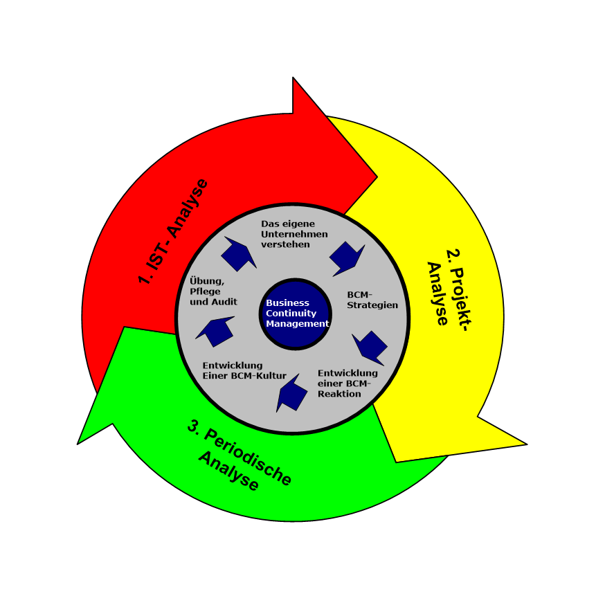

Background
The customer, one of the world's premier biopharmaceutical companies, required to develop and deliver a solid disaster recovery and business continuity plan for passing the IT Audit conducted by an external party at customer premises. The purpose and goal of the business continuity plan is to restore normal service operation as quickly as possible with minimu disruption to the business, thus ensuring that the best achievable levels of
availability and services are maintained. This has been accomplished by applying solutions found in the customer knowledge bases and documented workaround following ITIL guidelines. The main goal to reach the highest possible rating for the IT Audit applied.
Scope of transformation
- Provide an overview of all IT Service Management processes existing at customers premises.
- Line out and specify IT Service management processes
- Provide detailed information on each business and recovery process
- Identify and specify all parties involved in delivering IT Services to the customer
Scope of my deliverables
Establishment of a Business Continuity plan serving as consistent base for passing the external IT and Finance audit. ITIL rules & guidelines and different business continuity standards like
PAS 56/BS2599 were the framework for establishing relevant processes. The work for creating disaster recover and business continuity documentation required thorough business impact analysis with different stakeholders
(delivery, legal, purchase and retail) as well as the identification of
their critical services and processes. Due to high demands from legal on information protection, a seperate information protection plan was created. The business continuity plan, the simulation of different disaster recovery scenarios which were field tested and proper inventory management were part of the of the final report on business continuity.
Have a sneak peak at my work